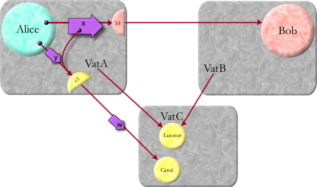
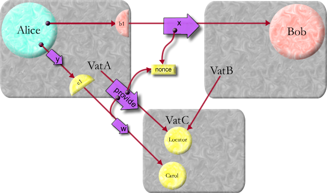
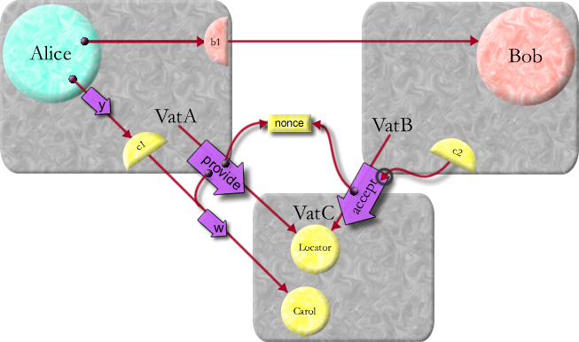
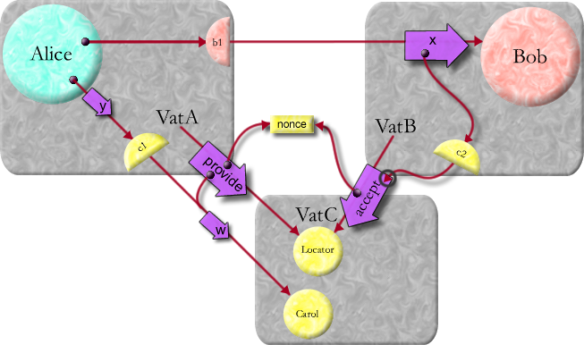
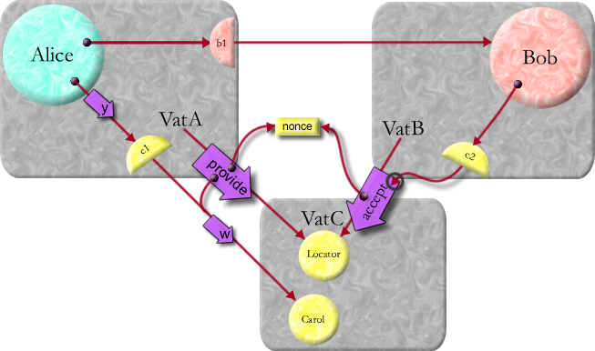
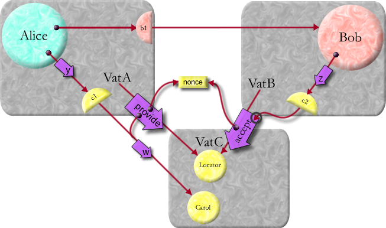
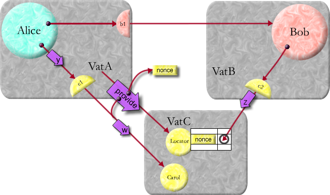
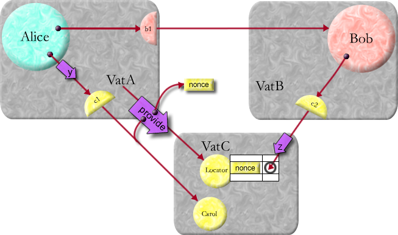
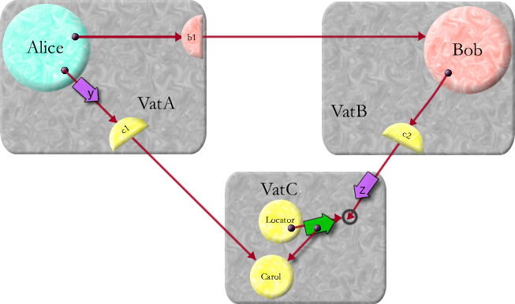
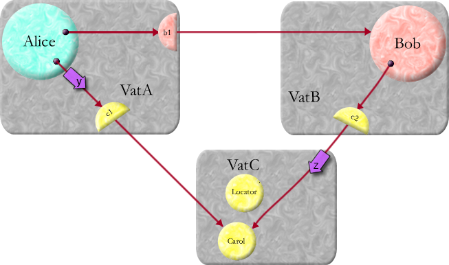

| |
CapTP
Ops: |
||||||
NonceLocator <- provideFor(gift :any, recipID :VatID, nonce :Nonce) :Vine |
VatA (the donor) deposits a reference to gift at nonce in VatC's (the host's) from-VatA-for-VatB table, and returns a Vine for the gift-entry. |
NonceLocator <- provideFor(gift :any, recipID :VatID, nonce :Nonce, swissHash :SwissHash) :Vine |
VatA (the donor) deposits a reference to gift at [nonce, swissHash] in VatC's (the host's) from-VatA-for-VatB table, and returns a Vine for the gift-entry. *** Doesn't work until the WormholeOp is implemented. Until then, use the above provideFor without the swissHash. |
recipPos identifies Carol (an export or answer on VatC's side of the VatA-VatC connection).
vatID identifies VatB.
VatB is the recipient.
This page can be read in sequence as an illustrated narrative, or the pictures can be flipped through as a crude animation. Aligns the first frame Click on each picture to advance to the next frame.

Say Alice says:
carol <- w() bob <- x(carol) carol <- y() and Bob responds according to his x method:
E-Order requires that Carol receive w() before y() or z(), and that y() or z() may arrive in either order. When Alice, Bob, and Carol are on three different vats, the protocol must enforce E-Order on VatB even if it does not obey the protocol. In other words, the information provided to VatB by the encoding of the x message must only enable VatB to cause messages to be delivered to Carol after w() has already been delivered to Carol. The protocol shown here is an adaptation of the proposed Client Utility introduction protocol. However, the Client Utility was not designed for pipelining, and so relied on round trips. Here, we show how CapTP adapts their idea for use with pipelining. Say w() is already in flight towards VatC. How does the introduction protocol serialize the x message onto the network? In order to illustrate a point, let's say the VatA/VatC link is slow and the other two links are fast. |
| 
The Locator shown in VatC is actually a NonceLocator specific to VatC's
side of the VatA/VatC connection. Between every pair of vats, there
is at most one inter-vat CapTP connection. All live references between
a pair of vats is multiplexed over this connection.
The three-vat CapTP protocol is layered on the two-vat protocol. Each side of each CapTP connection exports a NonceLocator object at position 0 in its incoming table, enabling the remote vat to send it messages using the two-vat CapTP protocol, in order to implement the three-vat CapTP protocol. Here, we see that VatA, in order to serialize the x message onto the network, generates a nonce -- a randomly chosen use-once unique number, which it sends to both VatB and VatC. It is sent to VatB in a Promise3Desc or a Far3Desc as the representation of the message argument, saying to VatB in effect "Get the argument from VatC by asking it for the object associated with this nonce." It is also sent as an argument in a provideFor message to VatC's NonceLocator for the VatA/VatC connection, saying to VatC in effect "Provide VatB access to Carol when he asks for the object associated with this nonce." def vine := locator <- provideFor(carol, vatBVatID, nonce) |
| 
The E-Order safety of this protocol depends on the two-vat protocol
to provide E-Order, so that the reference-to-Carol carried by the
provideFor message will itself be a reference to post-x Carol. The
two-vat CapTP protocol implements this simply by handling messages
on a connection in FIFO order, and queing them in their vat's local
queue, which is also serviced in FIFO order.
VatB unserializes the Promise3Desc or Far3Desc in the x message by initiating an attempt to connect to VatC, and setting up on its side of the provisional VatB/VatC connection a remote reference, to VatC's NonceLocator for VatB. Using this remote reference, it sends an acceptFrom message to this NonceLocator asking it for the object that VatA has made available to it at this nonce. def c2 := locator <- acceptFrom(vatASearchPath, vatAVatID, carolNonce, vine) |
| 
The Locator in our illustrations represents both VatC's NonceLocator
for VatA and VatC's NonceLocator for VatB, which are really two separate
objects accessing common state. The vine is
present to prevent a potential race condition in three-vat distributed
garbage collection, and is explained separately.
At the time that the acceptFrom message arrives at VatC, VatC and VatA may not yet be connected, so VatB sends to VatC the information needed to connect to VatA. The unserialization of the x message argument is the promise for the result of this acceptFrom message, and so VatB can proceed to send Bob the x message immediately, without blocking on the search for a VatC. bob <- x(c2) |
|  Bob receives the x message, and reacts by sending the z() message to c2. |
|  |
|  If the acceptFrom message arrives before the matching provideFor, then a table entry is created associating the nonce with a local promise for the object that will be associated with this nonce. The table also remembers the resolver of this promise, so that the matching provideFor can resolve it. |
This promise -- the local promise for the object to be associated with this nonce -- is returned as the result for the acceptFrom, so the z() message is queued in this promise. By queing z() in VatC while waiting for the matching provideFor, we minimize the latency cost associated with enforcing E-Order. |
| w() arrives and is delivered to Carol. |
|  |
|  The matching provideFor finally arrives, resolving the promise's resolver to Carol. This promise becomes a direct reference to Carol. |
|  When a promise resolves, it re-sends to its target all messages which have been queued in the promise. The z() message is now sent to Carol. |
Unless stated otherwise, all text on this page which is either unattributed or by Mark S. Miller is hereby placed in the public domain.
| |
|
report bug (including invalid html)
|
||||||||